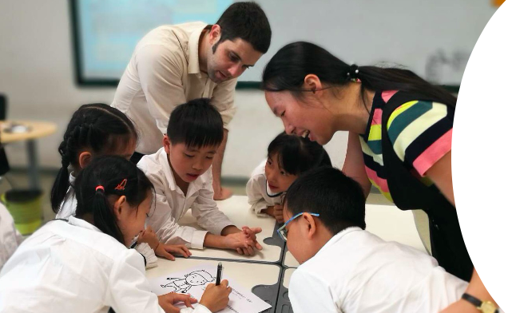

Working closely with teachers and academic coordinators in schools in Guangzhou, GuiYang, Qingdao and Shenzhen, the Educating Global Citizens through a US and China Lens project seeks: (a) to advance participating Weiming teacher’s practical capacity to teach for global competence through the use of global thinking routines; and (b) to understand how global thinking routines employed at the intersection of Chinese and Western pedagogical traditions contribute to teachers’ capacity to teach for global competence and to the development of students’ global competence.
Related Resources:
Mindfulness Test